Filebeat で IIS ログの更新を検知し Logstash で Elasticsearch に投入し Kibana で可視化する
目次
- 概要
- Filebeat で IIS ログを収集し Logstash に渡す
- Logstash で Filebeat から IIS ログを受け取り加工し Elasticsearch に投入する
- Kibana で可視化する
概要
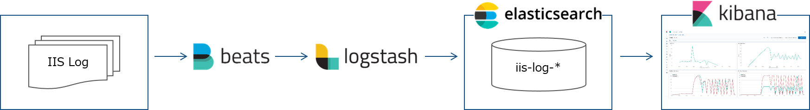
- Filebeat で IIS ログを監視し更新が発生したら Logstash に渡す。
- Logstash で IIS ログを JSON に変換し Elasticsearch に投入する。
- Kibana で Elasticsearch に格納された IIS ログを可視化する。
Kibana ダッシュボード
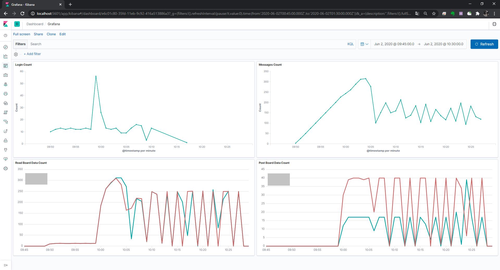
Filebeat で IIS ログを収集し Logstash に渡す
Filebeat の設定ファイル修正
filebeat.yml を修正する。
filebeat.yml
- パスに IIS ログを指定する。
- 除外対象行に 先頭が # の行，HealthChecker を指定する。
- 送信先を Logstash にする。
- 今回は同じマシンに Filebeat と Logstash が同居している。
- デフォルトで有効になっている Elasticsearch への出力を無効にする
#=========================== Filebeat inputs =============================
filebeat.inputs:
# Each - is an input. Most options can be set at the input level, so
# you can use different inputs for various configurations.
# Below are the input specific configurations.
- type: log
# Change to true to enable this input configuration.
enabled: true
# Paths that should be crawled and fetched. Glob based paths.
paths:
#- /var/log/*.log
- C:\inetpub\logs\LogFiles\W3SVC1\*.log
# Exclude lines. A list of regular expressions to match. It drops the lines that are
# matching any regular expression from the list.
#exclude_lines: ['^DBG']
exclude_lines: ['^#','HealthChecker']
# ---------------------------- Elasticsearch Output ----------------------------
# output.elasticsearch:
# # Array of hosts to connect to.
# hosts: ["localhost:9200"]
#----------------------------- Logstash output --------------------------------
output.logstash:
# The Logstash hosts
hosts: ["localhost:5044"]
サービス起動
設定ファイルが有効であることを確認し，サービスを開始する。
> cd 'C:\Program Files\Filebeat\'
> .\filebeat.exe -e test config
> Start-Service filebeat
Logstash で Filebeat から IIS ログを受け取り加工し Elasticsearch に投入する
Logstash の設定ファイル修正
logstash.conf を修正する。
logstash.conf
input {
# input from Filebeat
beats {
port => 5044
}
}
filter {
dissect {
# log format is TSV
mapping => {
"message" => "%{ts} %{+ts} %{s-sitename} %{s-computername} %{s-ip} %{cs-method} %{cs-uri-stem} %{cs-uri-query} %{s-port} %{cs-username} %{c-ip} %{cs-version} %{cs(User-Agent)} %{cs(Cookie)} %{cs(Referer)} %{cs-host} %{sc-status} %{sc-substatus} %{sc-win32-status} %{sc-bytes} %{cs-bytes} %{time-taken} %{X-Forwarded-For}"
}
}
date {
match => ["ts", "YYYY-MM-dd HH:mm:ss"]
timezone => "UTC"
}
ruby {
code => "event.set('[@metadata][local_time]',event.get('[@timestamp]').time.localtime.strftime('%Y-%m-%d'))"
}
mutate {
convert => {
"sc-bytes" => "integer"
"cs-bytes" => "integer"
"time-taken" => "integer"
}
remove_field => "message"
}
}
output {
elasticsearch {
hosts => [ 'elasticsearch' ]
index => "iislog-%{[@metadata][local_time]}"
}
}
IIS ログファイルを置く
過去に実施した性能検証時の IIS ログファイルを置くと Filebeat がそれを検知し Logstash に送信する。
送信されたデータは Logstash で加工され，Elasticsearch に投入される。
Kibana で可視化する
Elasticsearch の Index 確認
http://localhost:5601 にアクセスする。
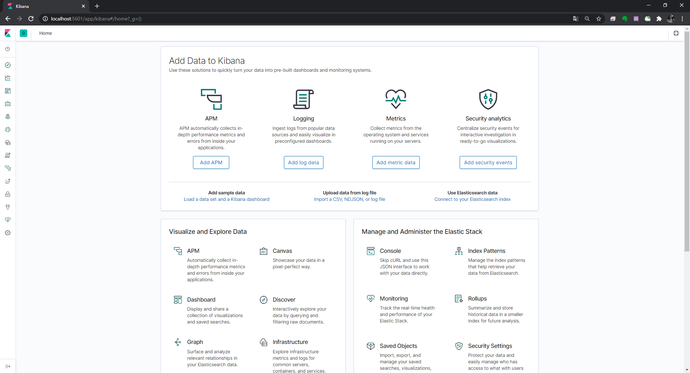
歯車アイコンをクリックし，Elasticsearch/Index Management をクリックする。
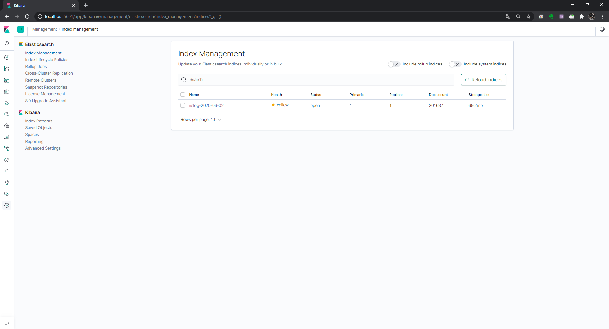
IIS ログの Index が作成されていることを確認する。
Kibana の Index Pattern 作成
Kibana/Index Patterns をクリックし，Create Index pattern をクリックする。
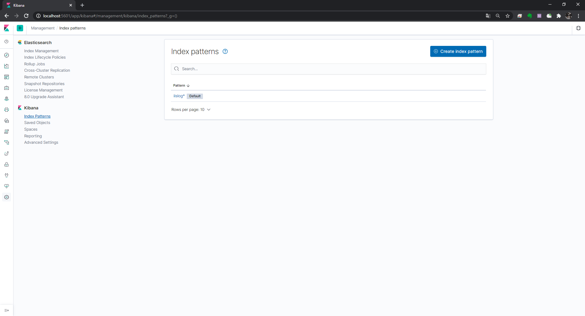
Index pattern を入力し Next step をクリックする。
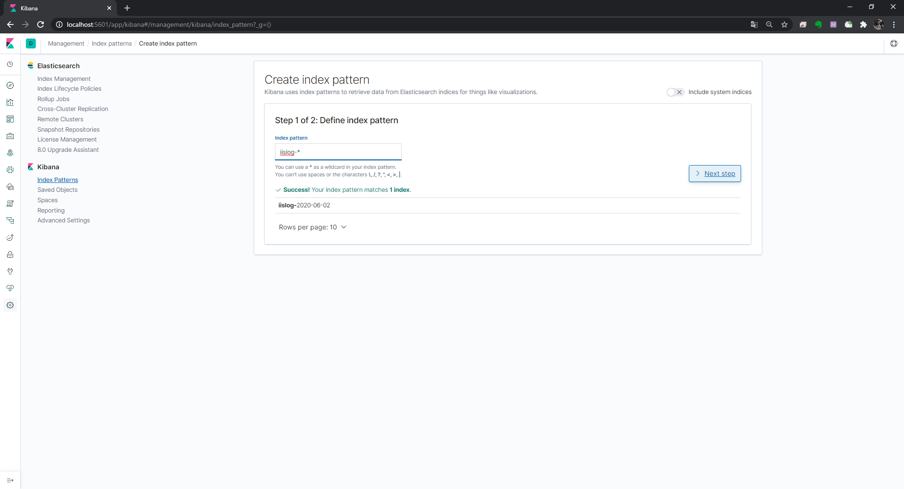
Time Filter field name で @timestamp を選択し Create index pattern をクリックする。
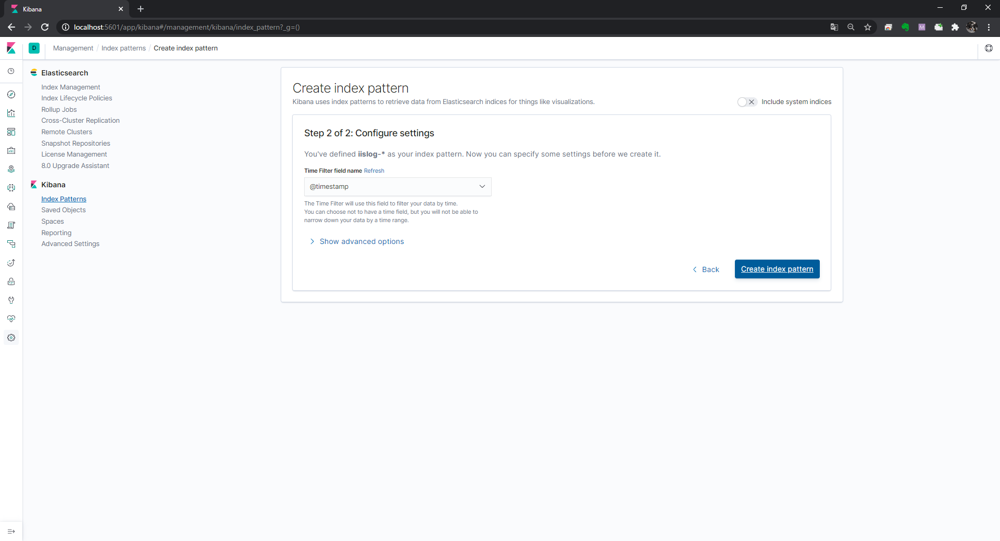
ここで作成した Index pattern を選択しグラフを作成していく。
グラフ作成

先ほど作成した Index pattern を指定する。
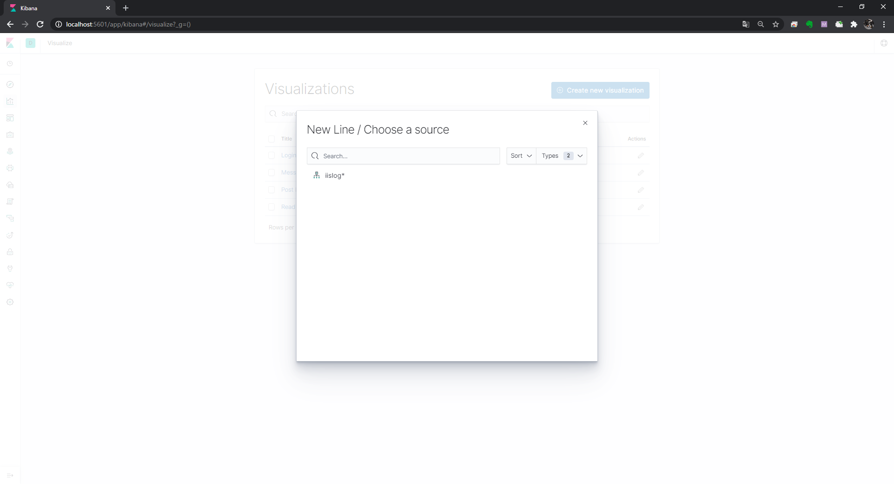
右上の表示期間を絞り込む。
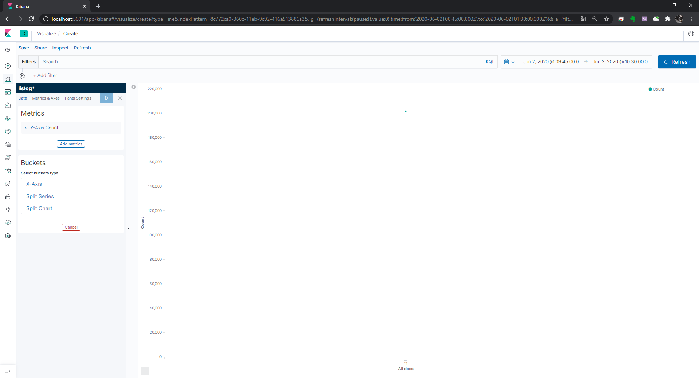
X 軸を指定する。
Aggregation を Date Histogram，Field を @timestamp，Minimum interval を Minute とし，▷をクリックする。
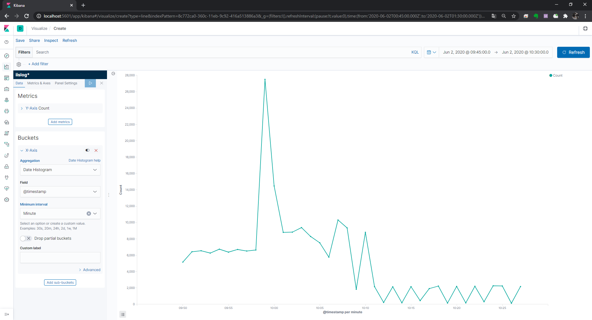
これで分間のリクエスト数がグラフに表示された。
機能ごとの分間リクエスト数を表示するには Add filter をクリックし，Field（フィルターをかけたい項目），Operator（演算子），Value（値） を指定する。
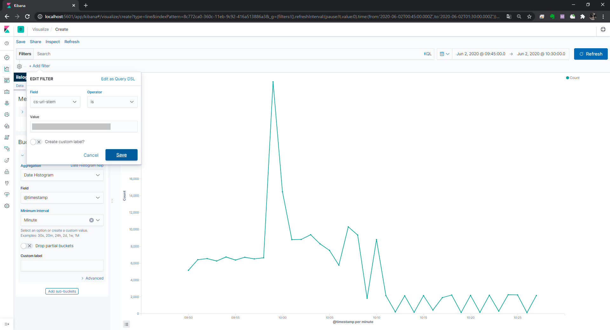 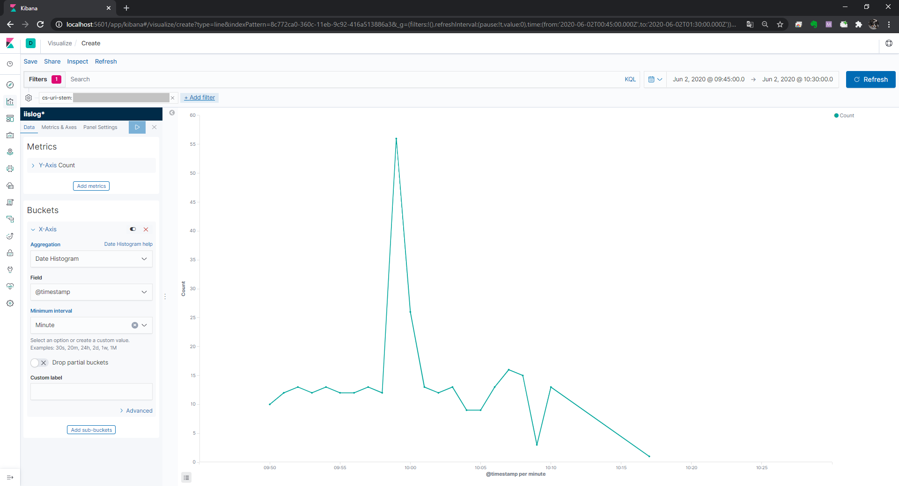